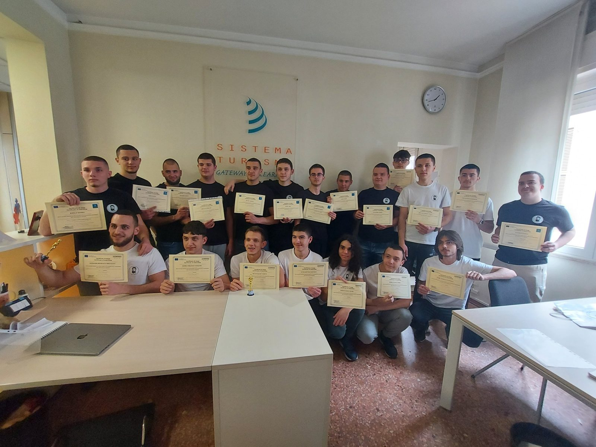

Автомобилна техника (АТ)
Програма „Car repair“ в автосервизи в Римини и региона.
Март – април 2026 г. Ученици от ПГМЕТТ „Христо Ботев“ работиха две седмици в италиански автосервизи и в ИТ компания, а се върнаха със сертификати Europass мобилност.

Проектът „Стъпка към успеха: Практика и развитие в международна среда“ се реализира с финансовата подкрепа на Европейския съюз по програма „Еразъм+“, Ключово действие 1 „Образователна мобилност за граждани“, сектор „Професионално образование и обучение“.
Целта е да се подобрят професионалните компетентности на учениците в мултикултурна среда и да се повиши пригодността им за заетост на европейския пазар на труда.
Партньор по проекта е организацията SISTEMA TURISMO s.r.l. от Римини, Италия. Участниците бяха избрани след предварителен подбор и изпит по английски език.
Програма „Car repair“ в автосервизи в Римини и региона.
Програма „AI Revolution“ с ментори от компанията Axonforce.
Тук ще бъдат снимките на учениците. Всяко поле може да се замени с реална фотография и надпис.
Освен практиката, учениците посетиха Римини, Сан Марино, Болоня, Музея на Ферари, парка „Италия в миниатюра“ и сафари парк.
Посещение в музея на великия италиански режисьор.
Визита в италианско техническо училище в Римини.
Учениците развиха умения за работа в екип, подобриха комуникацията си в международна среда и станаха по-самостоятелни и отговорни при изпълнение на задачите. Обучението в реална работна среда затвърди знанията им и ги подготви за професионална реализация.
След успешно завършване те получиха сертификати за Europass мобилност, както и удостоверения за придобитите умения от фирмите и организацията партньор.